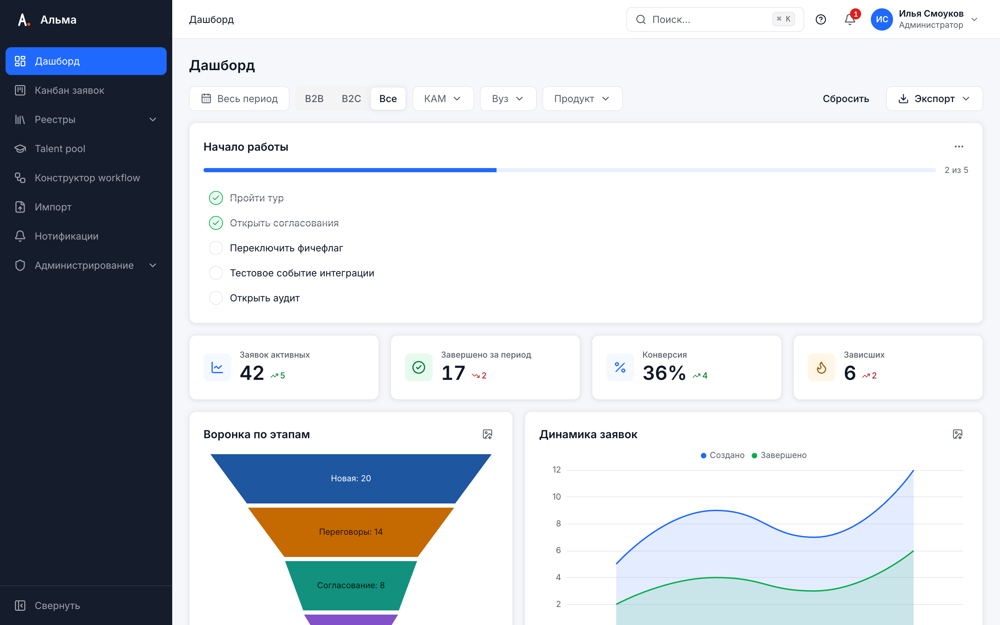
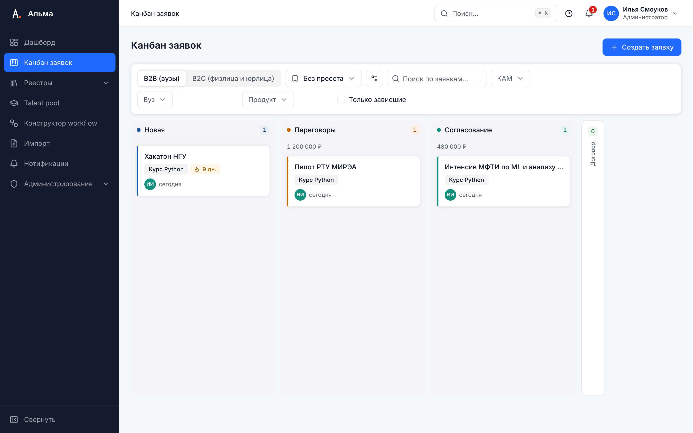
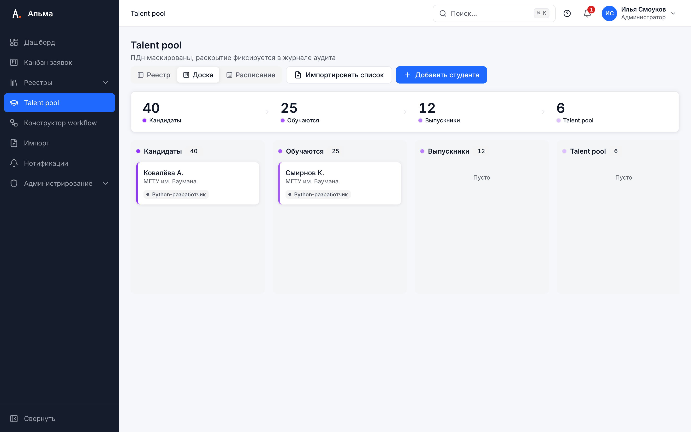
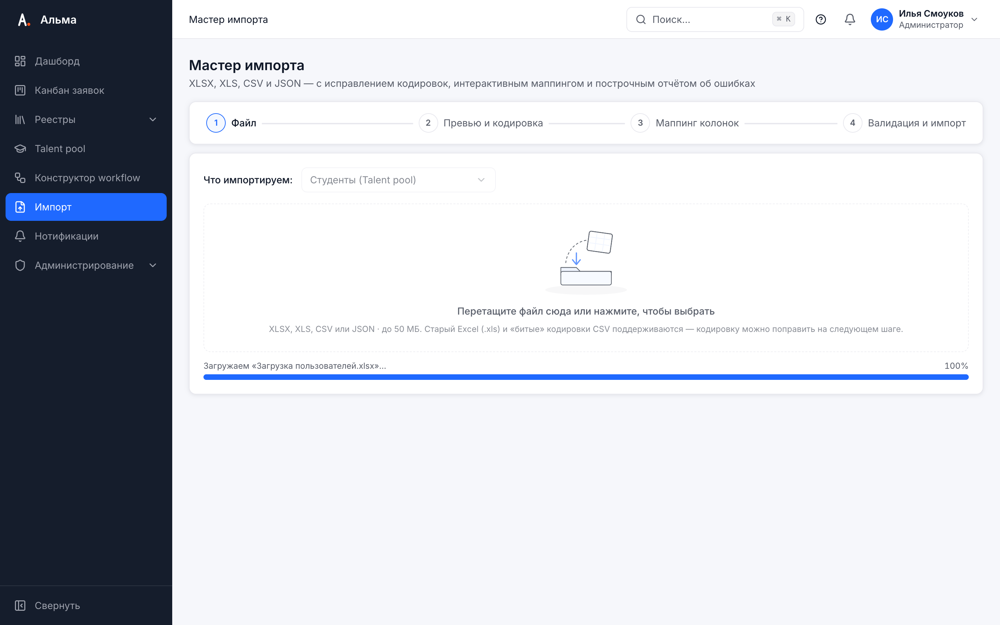
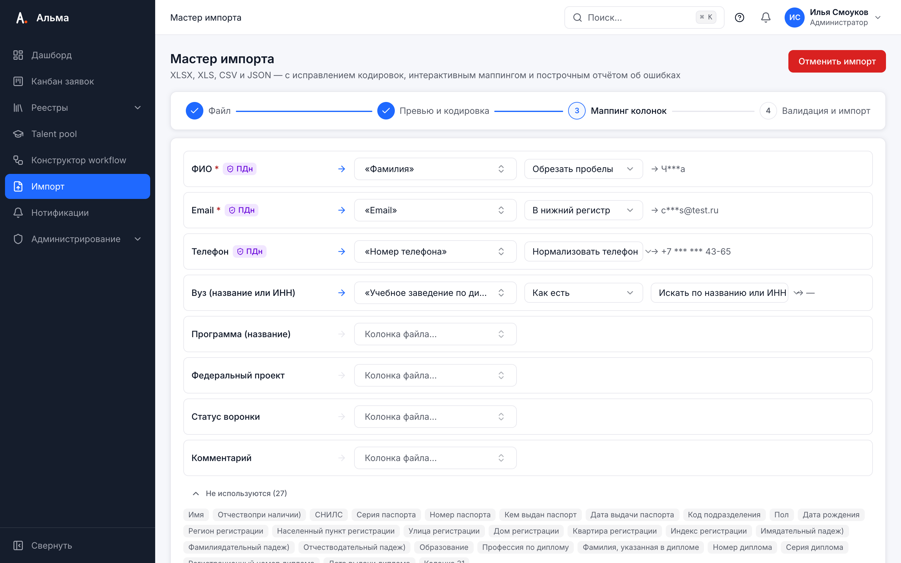
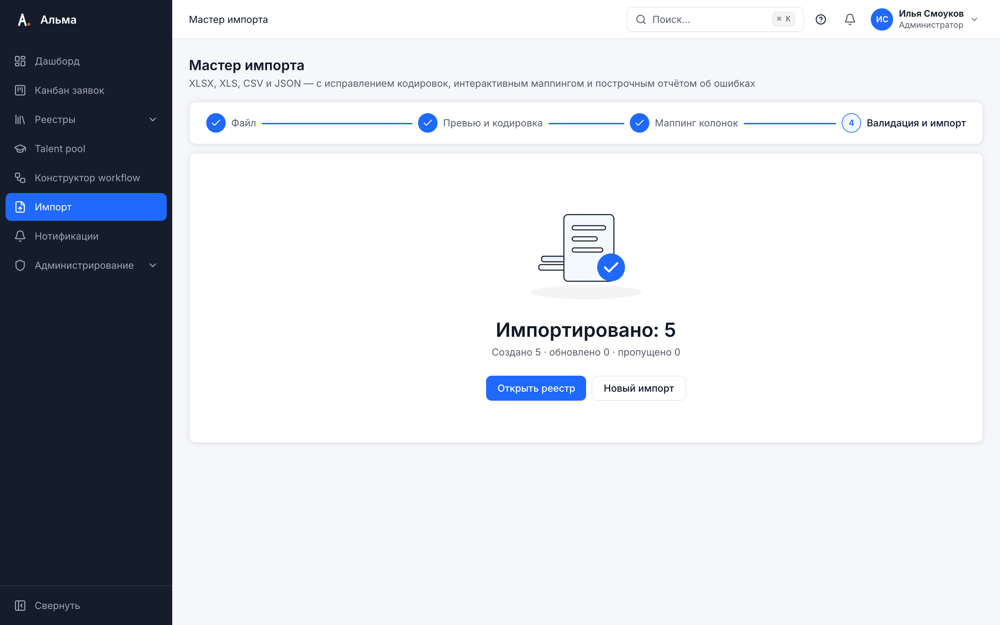
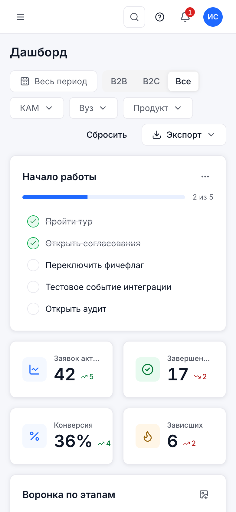
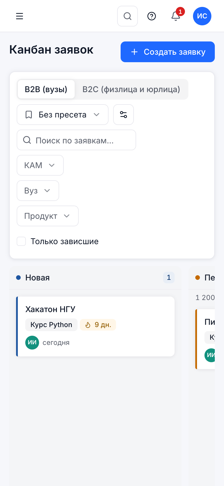

15Частые вопросыУведомления, переходы, скрытые данные, процессы
1С чего начать
«Альма» — CRM для работы с вузами и клиентами обучения. В ней ведутся заявки двух процессов — B2B (вузы) и B2C (физлица и юрлица), реестры вузов, договоров, продуктов и программ, пул талантов, отчёты и уведомления.
Откройте адрес системы и нажмите «Войти через Keycloak» — это единый вход организации. После входа вы вернётесь на ту страницу, которую открывали.
Слева — меню разделов. В нём только то, что разрешено вашей ролью: например, у наблюдателя нет «Импорта», а «Администрирование» видит администратор.
В шапке справа: глобальный поиск (вузы, заявки, студенты, договоры; клавиши Ctrl+K / ⌘K), кнопка «?» с турами по разделам, колокольчик уведомлений и меню профиля.
Рядом с поиском — тег вашей роли. Если роль только читает данные, рядом виден значок «Режим просмотра» (глаз): кнопки изменения в этом режиме скрыты.
Эта справка открывается пунктом меню «Справка» или из меню профиля. Ссылку на раздел можно переслать коллеге: у каждого раздела свой адрес, например /help#board.
Снимки экрана. Снимки сделаны на демо-стенде. Подписи пунктов меню на них могут отличаться от текущих — ориентируйтесь на названия в тексте.
2Демо-стенд и учётные записи
Демонстрационный стенд: https://crm.168-113-158-10.nip.io. Для всех демо-учётных записей пароль один: Demo2026!.
Логин
Роль
Что видит и может
admin@demo
Администратор
Всё: пользователи, роли и права, согласование процессов, интеграции, аудит, справочники, фичефлаги.
head@demo
Руководитель КАМов
Все заявки и отчёты по всем КАМам, распределение заявок, КАМы вузов, передача портфеля, правка схемы процесса через согласование.
kam1@demo
КАМ
Свой портфель: заявки, переходы, комментарии, файлы, вузы и студенты; отчёт «Активность КАМов» — по себе.
kam2@demo
КАМ
Второй КАМ — для проверки разграничения портфелей. На демо администратор может назначить ему роль «КАМ B2C».
observer@demo
Наблюдатель
Только чтение: заявки, реестры, отчёты по всем КАМам, аудит; персональные данные замаскированы.
Совет. Откройте два окна (обычное и приватное) под head@demo и kam1@demo: переходы заявок у КАМа сразу видны руководителю, а смена прав роли применяется у пользователя без перезахода.
3Роли и режим просмотра
Права выдаются ролями. Роль задаёт набор прав и область: в каких процессах (B2B, B2C или оба) они действуют и все ли заявки видны или только свои. Роли и права настраивает администратор в разделе «Администрирование → Роли и права»; изменения применяются сразу — появится сообщение «Ваши права обновлены администратором», перезаходить не нужно.
Роль
Коротко
Администратор
Полный доступ; права роли не редактируются.
Руководитель КАМов
Все заявки и справочники, распределение заявок и КАМов вузов, правка схемы процесса через согласование.
КАМ
Ведёт свой портфель заявок и вузов; видит все заявки, правит свои.
КАМ B2B, КАМ B2C
Права КАМа только в одном процессе — для разделения направлений.
Наблюдатель
Только чтение; персональные данные замаскированы.
Нет права на раздел — пункта нет в меню, а прямая ссылка ведёт на страницу «Нет доступа».
Право смотреть есть, менять — нет — данные видны, кнопки изменения скрыты. Если у роли нет ни одного права на изменения, в шапке горит значок «Режим просмотра».
Свои роли и процессы смотрите в меню профиля (аватар в правом верхнем углу).
4Аналитика
«Аналитика» — стартовый экран. Показатели считаются по заявкам, которые доступны вашей роли, с учётом фильтров панели.
Фильтры: период, процесс (B2B, B2C или «Все»), КАМ или переключатель «Мои / Все», вуз, ИТ-направление, продукт, программа. Графики пересчитываются сразу; «Сбросить» возвращает исходный вид. Кнопка «Отчёт по КАМам» переносит период, процесс, КАМов, вузы и ИТ-направления в отчёт «Активность КАМов».
KPI: заявок активных, завершено за период, конверсия, зависших. Под карточками написано, за какой период посчитаны «Завершено» и конверсия; без выбранного периода — за последние 30 дней. Стрелка рядом с числом — изменение к прошлому периоду той же длины.
Сигналы — карточка под KPI: что требует внимания сейчас. Зависшие заявки и заявки без ответственного КАМа открывают доску с этим фильтром; лицензии, которые истекают в ближайшие 30 дней или уже истекли, и закреплённые вузы без взаимодействий за 30 дней — список с переходом в карточку договора или вуза. Период панели на сигналы не влияет, остальные фильтры — влияют; «нет» — всё в порядке.
Графики: заявки по текущему этапу, динамика, нагрузка по КАМам, востребованность программ, пул талантов. Клик по столбцу этапа открывает доску с этим этапом, клик по карточке «Зависших» — доску с зависшими заявками.
Экспорт: меню «Экспорт» — PDF или PNG всей панели (по графику на страницу) и данные в XLSX или CSV. Отдельный график сохраняется в PNG значком в его углу.

Аналитика: фильтры, KPI и графики
5Отчёт «Активность КАМов»
Отчёт отвечает на вопрос: какой КАМ за выбранный период работал с какими вузами и на каких этапах остановились заявки. Откройте пункт меню «Активность КАМов». КАМ видит отчёт только по себе, руководитель и наблюдатель — по всем КАМам.
Выберите период: неделя, месяц, квартал, прошлый квартал или свой диапазон дат.
Сузьте отчёт фильтрами: процесс, КАМ (если доступен), вуз, ИТ-направление (действует на всех вкладках); на вкладке «Взаимодействия за период» — ещё ИТ-продукт, программа и статус.
Вкладка «Детализация» — дерево «КАМ → вузы → заявки» с этапом на конец периода, днями на этапе и признаком «зависла». На телефоне то же дерево показано карточками.
Вкладка «Сводка для заказчика» — ключевые показатели и выводы на одном экране; её же выгружает пункт «PDF для заказчика».
Вкладка «Взаимодействия за период» — таблица заявок, по которым была работа. Кнопкой выбора колонок оставьте нужные (вуз, ИТ-направление, ИТ-продукт, статус, ответственный и другие) и выгрузите таблицу в XLSX или PDF ровно с этими колонками.
Меню «Экспорт» в шапке отчёта: PDF для заказчика, XLSX со всеми листами, CSV со списком заявок, XLSX и PDF взаимодействий по колонкам.
Подсказка «Как считается» рядом с периодом объясняет правила: что считается взаимодействием, как определяется этап на конец периода и когда заявка «зависла».
Клик по заявке в отчёте открывает её карточку.
Сводка ИИ
Кнопка «Сводка ИИ» собирает короткий текст по цифрам отчёта за выбранные период и фильтры: главный итог, что идёт хорошо, где отставание и задержки, кто требует внимания и вопросы для разбора. Это пересказ фактов, а не советы: оценок людей и рекомендаций по процессам в сводке нет. По умолчанию кнопку видят руководитель КАМов и администратор; если кнопки нет — у роли нет права или администратор выключил сводки. Если право на сводки у роли есть не во всех процессах, кнопка появится, когда в фильтре выбран процесс.
По команде. Нажмите «Сводка ИИ» в шапке отчёта — панель появится над вкладками и не зависит от выбранной вкладки. Чип с именем КАМа под сводкой открывает его разбор на вкладке «Просрочки».
По одному КАМу. На вкладке «Просрочки» откройте разбор КАМа (клик по строке таблицы) — кнопка «Сводка ИИ» стоит справа от его имени, панель — под шапкой разбора.
Ожидание. Сводка готовится обычно до минуты. GigaChat обрабатывает запросы по одному, поэтому панель показывает, сколько сводок в очереди перед вашей. Панель можно скрыть — сводка дособерётся, и повторный клик в течение часа покажет её сразу.
Готовая сводка. Её можно скопировать в письмо или чат, обновить (сформировать заново по свежим цифрам, не из кэша; сводку моложе 5 минут кнопка просто покажет снова) или получить по правилам — шаблоном из тех же цифр, без ИИ. Из сводки по правилам можно вернуться к GigaChat кнопкой «Сформировать GigaChat».
Сверяйте цифры. Текст с пометкой «Сформировано GigaChat» написан моделью. Перед показом система проверяет, что каждое число есть в данных отчёта, и убирает фразы с числами, которых в отчёте нет, советы и оценки людей; итог проверки виден внизу панели. Перепутанные показатели проверка не отличит — решения принимайте по самому отчёту.
Какие данные уходят в GigaChat?
Только посчитанные цифры отчёта и названия этапов и процессов. КАМы заменяются псевдонимами «КАМ-01», «КАМ-02»…, имена подставляются обратно уже в CRM. ФИО, названия вузов, клиенты-физлица, данные студентов, заголовки заявок, суммы и комментарии не отправляются.
Сводка не сформировалась — что делать?
Нажмите «Сводка по правилам»: она строится из тех же цифр без ИИ и работает всегда. «Повторить» запросит GigaChat ещё раз — например, если он был занят другими сводками или не ответил вовремя. Новых сводок GigaChat на одного пользователя — не больше 10 в час (готовые из кэша не считаются), чтобы дневной лимит GigaChat хватал всем.
Что значит «Фильтры изменились — сводка за прежние параметры»?
Сводка относится к тем периоду и фильтрам, с которыми её запросили. После смены фильтров нажмите «Обновить» в панели — сводка соберётся по новым параметрам.
6Доска заявок
Доска — основной рабочий экран КАМа. Колонки — этапы процесса, карточки — заявки. Переключатель B2B / B2C выбирает процесс; у каждого процесса своя схема этапов.
Перевод на этап. Перетащите карточку в другую колонку. Откроется окно перехода: комментарий по желанию, обязателен он только при возврате назад и на переходах, где этого требует схема. К переходу можно приложить файлы — они попадут в историю заявки под этим переходом. Подтвердить — кнопкой или Ctrl+Enter (⌘+Enter).
Недоступные колонки. Схема разрешает не любые переходы: колонка, куда перевести нельзя, при перетаскивании подсвечивается как недоступная.
Фильтры. Пресеты фильтров, поиск по заявкам, КАМ или «Только мои», вуз, продукт, «Только зависшие». Фильтры, пришедшие с «Аналитики» (в том числе «Без ответственного КАМа» из карточки «Сигналы»), сбрасываются одной кнопкой.
Новая заявка. Кнопка «Создать заявку» открывает форму: для B2B — вуз и договор, для B2C — клиент и тип взаимодействия.
Доска обновляется сама: переходы коллег появляются без перезагрузки. Если администратор опубликовал новую схему процесса, над доской появится сообщение «Схема процесса обновлена администратором — доска перестроена».

Доска заявок: колонки этапов, карточки, фильтры
7Карточка заявки и файлы в статусах
Карточка открывается кликом по заявке на доске, в отчёте или в поиске. В шапке — название, текущий этап, признак «зависла» и источник заявки (импорт, сайт, LMS), если она пришла не вручную.
Факты: контрагент (ссылка на карточку вуза), ответственный, даты создания и обновления. Ответственного меняет тот, у кого есть право распределять заявки; свободную заявку КАМ может «Взять на себя».
«Перевести на этап» — меню только с разрешёнными переходами; дальше то же окно перехода, что и на доске.
Таймлайн — вся история: переходы с комментариями и файлами, изменения полей, назначения, события интеграций. Фильтры: «Все», «Этапы», «Изменения», «Интеграции».
Комментарии — обсуждение заявки; через @ в текст подставляется имя коллеги.
Файлы — документы заявки. Файл, загруженный здесь, привязывается к текущему этапу; файл из окна перехода — к самому переходу. Так видно, какой документ приложили на каком этапе.
Сведения — поля заявки (на широком экране они справа от вкладок).
Группа меню «Реестры» собирает справочную часть CRM. Все таблицы устроены одинаково: поиск, фильтры, сохранённые пресеты, выбор видимых колонок, постраничный вывод и выгрузка в XLSX или CSV. Клик по строке открывает карточку.
Вузы — карточка вуза с контактами, договорами, заявками и закреплённым КАМом. Сменить КАМа вуза может руководитель (право назначать КАМов вузов); смена записывается в журнал аудита.
Договоры — номер, сроки, статус, файлы договора.
Продукты и Программы — каталог обучения. В «Программах» два режима: ручной приоритет (порядок задаёт руководитель) и «По заявкам» — сколько заявок пришло на программу.
ИТ-направления (анализ данных, ML и ИИ, DevOps, QA и другие) — общий справочник. У продукта может быть несколько направлений, у программы — одно своё; если своего нет, программа наследует направления продукта (в карточке программы это подписано «по продукту: …»). В реестрах продуктов и программ есть колонка и фильтр «ИТ-направление»; дашборд, отчёт КАМов и выгрузки считают направление по тому же правилу.
9Пул талантов
Пул талантов — работа со студентами по воронкам «Кандидаты», «Обучаются», «Выпускники», «Пул талантов». Карточки двигаются по статусам так же, как заявки на доске.
Маскирование. ФИО, телефон и e-mail в списках скрыты частично — это защищает данные при показе экрана.
Раскрытие на 60 секунд. Кнопка «Показать» в карточке студента раскрывает данные на минуту с обратным отсчётом; факт раскрытия пишется в журнал аудита. У наблюдателя раскрытия нет.

Пул талантов: персональные данные замаскированы
10Конструктор процессов
Конструктор меняет схемы процессов B2B и B2C: этапы, переходы, пороги «зависания», обязательность комментария. Что вам доступно, показывает плашка «Ваш уровень» над схемой.
Уровень
Что можно
Просмотр
Смотреть схему без правок.
Правка с согласованием
Готовить черновик и отправлять пакет изменений; публикует согласующий.
Правка и публикация
Публиковать изменения сразу и согласовывать пакеты других.
1 · ЧерновикПравки копятся в черновике и на рабочую доску не влияют.
2 · ПредпросмотрПеред отправкой система показывает дифф и сколько заявок затронет изменение.
3 · СогласованиеПакет уходит в «Администрирование → Согласования» или публикуется сразу — по уровню.
4 · ПубликацияСхема меняется у всех, доски перестраиваются без перезагрузки.
Удаление этапа с заявками. Система попросит выбрать соседний этап, куда перенести заявки, и подтвердить действие вводом названия. Перенос выполняется одной транзакцией: либо переносятся все заявки, либо ни одна; каждой заявке добавляется запись в историю, а срок на этапе не обнуляется.
Пока изменение не опубликовано, команда работает по прежней схеме.
11Импорт данных
Импорт переносит в «Альму» данные из таблиц и выгрузок других систем: вузы, заявки B2B, заявки B2C, студентов, справочник продуктов и таблицу КАМов — вузы с договорами, лицензиями на ИТ-продукты и закреплёнными КАМами. Форматы — XLSX, XLS, CSV, TSV и JSON, файл до 20 МБ.
Файл. Откройте «Импорт», выберите, что импортируете, и перетащите файл в область загрузки.
Превью и кодировка. Проверьте первые строки; для CSV можно сменить кодировку, если вместо букв видны «кракозябры», для Excel — выбрать лист.
Маппинг колонок. Сопоставьте колонки файла полям системы. Очевидные совпадения мастер предлагает сам, в том числе по похожим заголовкам; удачный маппинг можно сохранить шаблоном. Для полей-ссылок (вуз, продукт) правило «Создавать отсутствующие» заводит в справочнике запись, которой ещё нет, вместо ошибки в строке. Колонка «Направление» в файле заявок попадает в поле «ИТ-направление»: значение ищется в справочнике по коду или названию и привязывается к продукту заявки.
Проверка и импорт. Система проверяет каждую строку: обязательные поля, даты и числа, дубликаты, ссылки на справочники. Корректные строки загружаются, по каждой отклонённой виден номер строки, колонка и причина.
Таблица КАМов
Тип «Таблица КАМов» загружает одной таблицей вузы, их договоры, лицензии на ИТ-продукты и ответственных КАМов. Обязательные колонки — вуз (название или ИНН), ИТ-продукт и номер договора; остальные необязательны: ИТ-направление, вендор, дата подписания и срок лицензии, статус передачи, ответственный КАМ, ответственные от вуза, комментарий. На шаге «Файл» есть памятка по колонкам и кнопка «Скачать шаблон CSV».
Договор ищется по номеру без учёта регистра: повторная загрузка обновляет договор, а не создаёт второй. Несколько продуктов одного договора — отдельными строками или через запятую в одной ячейке.
Срок лицензии понимается как «1», «3 года», «до 2027», «31.12.2027» или «бессрочно»; дата окончания считается от даты подписания и входит в срок.
КАМ ищется по фамилии и имени, полному ФИО, логину или e-mail. Смена КАМа вуза попадает в историю и в отчёт «Активность КАМов».
Права те же, что в карточках: КАМ меняет только свои договоры и не переназначает чужие вузы — такие строки отклоняются с причиной, остальные загружаются.
После импорта лицензии видны в карточке договора, в блоке «Лицензии»: даты, срок и статус передачи.

Шаг 1: выбор сущности и файла

Шаг 3: маппинг колонок

Итог: сколько строк загружено и почему отклонены остальные
12Уведомления и Telegram-бот
Уведомления приходят в колокольчик в шапке и в подключённые каналы. По умолчанию их получает ответственный по заявке. Настройки — пункт меню «Нотификации» или «Настройки нотификаций» в меню профиля.
Каналы: Telegram, e-mail, Max и «В приложении». Каждый включается отдельно, есть тестовая отправка.
Подписки на события: отметьте, о каких событиях сообщать и в какие каналы.
Пороги «зависания» задаются на этапах в конструкторе процессов (пустое поле — наследуется от процесса, 14 дней); на этой странице — подсказка со ссылкой на конструктор. Эскалацию руководителю включает администратор.
Эскалация: если заявка висит дольше полутора порогов, уведомление получает и руководитель КАМа.
2 · КодСистема покажет одноразовый код и QR; код действует 10 минут.
3 · БотОткройте @collabse_alma_crm_bot и отправьте /link с кодом.
4 · ГотовоОкно в «Альме» само сообщит о привязке.
Команда бота
Что делает
/my
Мои открытые заявки
/stuck
Зависшие заявки
/summary
Сводка по воронке
/inbox
Непрочитанные уведомления
/link, /unlink
Привязать или отвязать аккаунт
/help
Список команд
13Работа с телефона
«Альма» — адаптивный веб-интерфейс от 375 px: работает в мобильном браузере, устанавливать приложение не нужно.
Меню открывается кнопкой ☰ в левом верхнем углу; тег роли и значок «Режим просмотра» видны и на телефоне.
Доска листается по колонкам вбок. Перевести заявку удобнее из карточки: кнопка «Перевести на этап» на телефоне растянута во всю ширину.
Карточка заявки: вкладки прокручиваются вбок, поля заявки — на вкладке «Сведения».
Отчёт «Активность КАМов» на телефоне показан карточками «КАМ → вузы → заявки»; широкие таблицы прокручиваются внутри своего блока, а не всей страницей.
«Роли и права» на телефоне — одна колонка; матрица прав — списком по ролям.
Конструктор процессов рассчитан на большой экран: с телефона схему удобно смотреть, а править — с компьютера.

Аналитика на телефоне

Доска заявок на телефоне
14Подсказки и обучение
При первом входе открывается приветственный экран и короткий тур по ключевым элементам интерфейса.
Кнопка «?» в шапке: туры по разделам (тур текущего раздела — первым), «Показать контрольный список», «Приветственный экран».
Контрольный список «Начало работы» на «Аналитике» отмечает первые шаги для вашей роли; его можно скрыть и вернуть из меню «?».
15Частые вопросы
Не пришло уведомление о переходе заявки
Уведомления по умолчанию адресуются ответственному. Если вы не ответственный по заявке — уведомление вам не положено.
Проверьте: вы ответственный (поле «Ответственный» в карточке); Telegram привязан; событие включено в «Подписках на события». Нужны уведомления по всем заявкам — обратитесь к администратору.
Код привязки Telegram не принимается
Код одноразовый и действует 10 минут. Откройте «Нотификации → Привязать Telegram» ещё раз и отправьте боту новый код.
Не получается перевести заявку в нужный этап
Схема процесса разрешает не все переходы. Посмотрите схему в «Конструкторе процессов». Если переход не открывается без комментария — значит, это возврат или переход, где комментарий обязателен.
Нет кнопки изменения или пункта меню
Ваша роль это не разрешает. Свои роли и процессы смотрите в меню профиля; права меняет администратор, перезаходить после этого не нужно.
Персональные данные студента скрыты
Это маскирование. Нажмите «Показать» в карточке студента — данные откроются на 60 секунд, раскрытие попадёт в журнал аудита.
Изменил процесс в конструкторе, а доска прежняя
Изменение ещё в черновике или ждёт согласования. Статус пакета виден в конструкторе; опубликованная схема перестраивает доски сама.
На экране ошибки есть «Код обращения»
Сообщите этот код администратору: по нему он найдёт запрос в журналах.